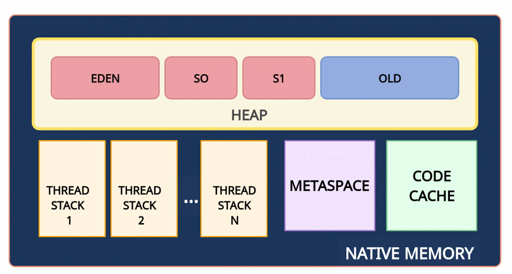
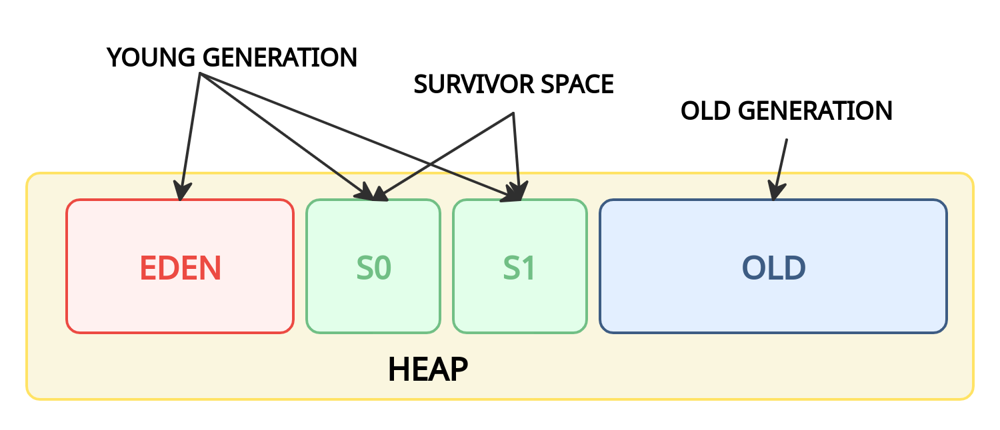

Память
Типы памяти

Вся область памяти называется Native Memory
PermGen (Permanent Generation)
Описание
- С Java 8 ему на смену пришла область Metaspace.
Metaspace (метаданные)
Описание
- Является общими для всех.
- Макс размер настраивается с помощью флага MaxMetaspaceSize.
Здесь хранятся
- Хранятся метаданные классов.
- Статические переменные.
CodeCache (кэш кода)
Описание
- JIT-компилятор компилирует часто исполняемый код, преобразует его в нативный машинный код и кеширует
для более быстрого выполнения.
Heap(куча)
Описание
- Используется Java Runtime для выделения памяти и хранения объектов и JRE классов.
- Здесь работает сборщик мусора: освобождает память путем удаления объектов, на которые нет каких-либо
ссылок.
- Любой объект, созданный в куче, имеет глобальный доступ и на него могут ссылаться с любой части
приложения.
- Доступно для всех потоков.
- Для JVM мы можем задать начальный пул выделения памяти (Xms) и максимальный пул выделения памяти
(Xmx).
- Если куча переполнена получаем OutOfMemoryError.
Здесь хранятся
- При запуске программы сюда загружаются все классы среды выполнения
- Pool String
- Объекты
- Переменные(поля) объекта
- Статические переменные
Stack
Описание
- Всякий раз, когда вызывается метод, в памяти стека создается новый блок, и после его завершения
удаляется вместе с переменными(LIFO).
- Размер стековой памяти намного меньше объема памяти в куче.
- Используется только одним потоком.
- Для JVM мы можем задать максимальный пул стековой памяти(Xss).
- Если память стека переполнена получаем StackOverflowError.
Здесь хранятся
- Stack вызова методов.
- Локальные(внутри методов) примитивы.
- Ссылки на локальные объекты(которые хранятся в heap).
Garbage Collector
Мусор - объект в Heap на которого никто не ссылается.
Работа Garbage Collector
- Mark(маркировка) - на первом этапе GC сканирует все объекты и помечает живые. Выполнение программы
приостанавливается. Поэтому этот шаг также называется "Stop the World".
- Sweep(очистка) - очистка объектов без отметок.
- Compact(уплотнение) - оставшиеся объекты подвигаются друг к другу для удобства.
Поколения объектов

Для оптимизации сборки мусора память кучи дополнительно разделена на четыре области. В эти области, объекты
помещаются в зависимости от их возраста(как долго они используются в приложении).
Young Generation
- EDEN - новые объекты.
- S0, S1(Survivor space) - выжившие.
Old generation
- OLD - для старых объектов.
Алгоритм сборки мусора, использующий поколения
- Новые объекты создаются в EDEN.
- Когда область Eden заполняется, происходит минорная сборка мусора (Minor GC). Minor GC — mark и sweep
выполняются для young generation.
- Живые объекты перемещаются в одну из областей Survivor (например, S0).
- При следующем Minor GC процесс повторяется. Но объекты в областях S0 и S1 меняются метами, увеличивая
свой возраст.
- Объекты между областями Survivor копируются определенное количество раз (пока не переживут
определенное количество Minor GC) или пока там достаточно места. Затем эти объекты копируются
в область Old.
- Major GC - этапы mark и sweep выполняются для Old Generation. Major GC работает медленнее по сравнению
с Minor GC, поскольку старое поколение в основном состоит из живых объектов.
Сборка мусора: флаги
- -XX:NewRatio=n - отношение размера Old Generation к Young Generation
- -XX:SurvivorRatio=n - отношение размера Eden к Survivor
- -XX:MaxTenuringThreshold=n - возраст объекта, когда объект перемещается из области Survivor в область
Old Generation
Включение логов GC
-XX:+PrintGCDateStamps -verbose:gc -XX:+PrintGCDetails -
Xloggc:/tmp/[Application-Name]-[Application-port]-%t-gc.log -
XX:+UseGCLogFileRotation -XX:NumberOfGCLogFiles=20 -
XX:GCLogFileSize=100M
Виды Garbage Collector(сборщик мусора)
- Serial Garbage Collector - S GC
Один поток.
-XX:+UseSerialGC
- Parallel Garbage Collector - P GC
Несколько потоков.
Многопоточность ускоряет сборку мусора.
-XX:+UseParallelGC
- CMS Garbage Collector - CMS GC
- G1 Garbage Collector - G1 GC
Выполняет некоторую тяжелую работу параллельно с работой приложения.
-XX:+UseG1GC
- The Z Garbage Collector - ZGC
Выполняет всю тяжелую работу параллельно с работой приложения.
В приоритете время отклика.
Низкая задержка.
-XX:+UseZGC
Garbage Collector по умолчанию
- Java 7 - Parallel GC
- Java 8 - Parallel GC
- Java 9 - G1 GC
- Java 10 - G1 GC
- Java 11 - Z GC
Вопросы
System.gc() - метод для выполнения сбора мусора. Но JVM сама решить запускать или нет.
finalize() - вызывается перед удалением объекта. С Java 9 не рекомендуем к использованию.